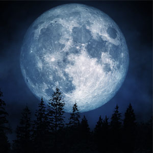

Full Moon Serum
This serum will prevent any shifting to a wolf form at all. Any Lycan can purchase the Full Moon Serum. You may choose to if it is your will. If it is mandatory for you, the Spirit Claw tribe will let you know.
This serum will prevent any shifting to a wolf form at all. Any Lycan can purchase the Full Moon Serum. You may choose to if it is your will. If it is mandatory for you, the Spirit Claw tribe will let you know.
This serum is only avail able to those who have proven that they have the ability to be trusted with the ability to shift at will and who have proven to be in good standing with the Lycan community as well as have had minimal to no violations of the creeds and policies of the Lycan communities.